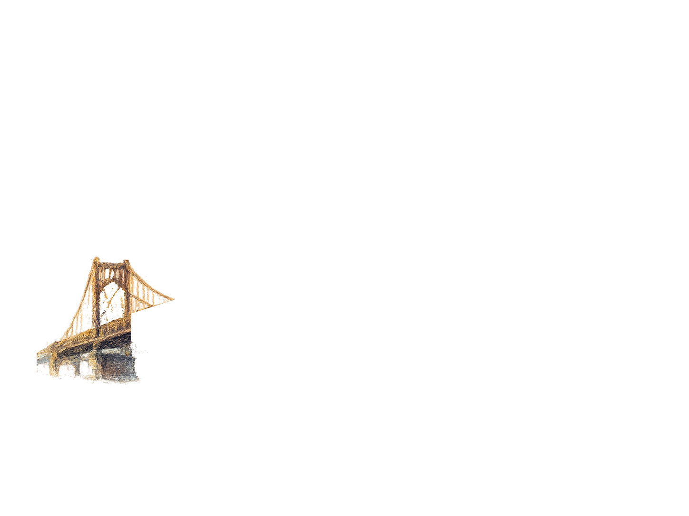
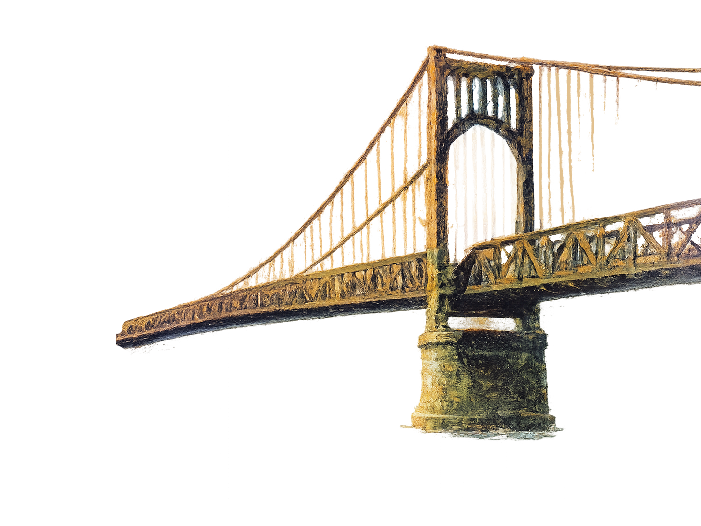
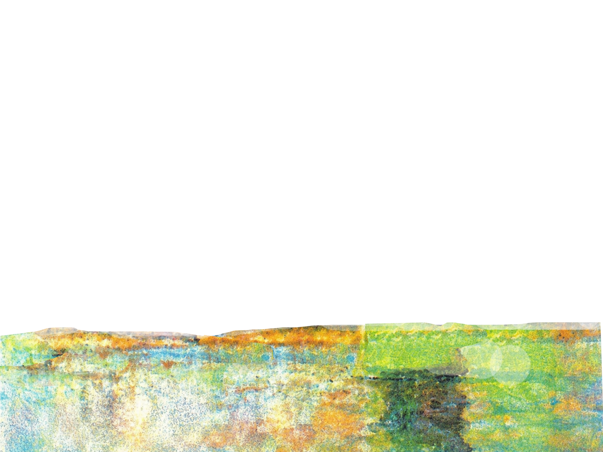

AR 明信片即時調參 v9.6 iPhone船修正版
新增背景切換、第二艘船、每朵雲獨立 Z/大小/透明呼吸與更明顯船尾水紋。
開始 AR 掃描



尚未啟動
Camera: 等待資訊…
調整參數
結束掃描
看說明
整體 / 背景
整體尺寸
整體 Z
使用白色底層
白底透明度
白底 Z
白底大小
使用黑色底層
黑底透明度
黑底 Z
黑底大小
使用 bk.png 自訂背景
BK透明度
BK Z
BK大小
背景不規則柔邊
柔邊範圍
邊緣不規則
橋
後橋 Z
前橋 Z
船 1
大小
Y
Z
起點 X
終點 X
速度
亮度
對比
船 2
啟用第二艘船
大小
Y
Z
起點 X
終點 X
速度
亮度
對比
雲整體
整體速度
歷史字幕 / 電影片尾
顯示歷史字幕
1920年 明治橋 明治橋曾是城市交通與河岸景觀的重要節點。 在時代更迭中，橋梁見證了地方生活與城市發展。
字幕 X
字幕 Y
字幕 Z
框寬
框高
字體大小
字型
楷體 / 書法感
明體 / 傳統
宋體 / 書卷感
明體 / 傳統
宋體 / 書卷感
黑體 / 現代
圓體 / 柔和
手寫感
打字機
細黑體
系統 UI
系統 UI
文字顏色
COLOR
文字透明度
框底顏色
BG
框底透明度
捲動速度
循環播放
套用歷史字幕
現場文字
顯示文字
送出
文字 X
文字 Y
文字 Z
字體大小
字型
楷體 / 書法感
明體 / 古典
黑體 / 現代
圓體 / 柔和
手寫感
打字機
細黑體
粗細
一般
半粗
粗體
特粗
文字描邊
文字動畫
無
輕微漂浮
呼吸縮放
淡入淡出
打字出現
光澤掃過
動畫速度
動畫幅度
水層（穩定版）
顯示 water.png
透明度
Y
Z
大小
流動幅度
流動速度
水邊柔化
水邊不規則
船尾水紋
生成間隔
水紋大小
水紋透明
存活時間
向後延展
輸出目前參數